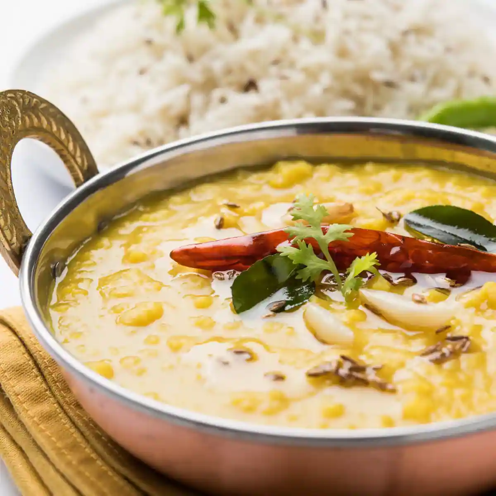

Home
Rosogolla

Description
Cholar Dal is a traditional Bengali dish made from split Bengal gram, cooked with coconut, ghee, and aromatic spices, offering a rich, mildly sweet flavor. 🍛
Ingredients
- Chana dal (Bengal gram) -> cup
- Turmeric powder -> ½ tsp
- Salt -> to taste
- Sugar -> 1 tsp (optional)
- Grated coconut -> 2 tbsp
- Bay leaf -> 1
- Cardamom pods -> 2-3
- Cinnamon stick -> 1 small piece
- Cloves -> 2-3
- Cumin seeds -> ½ tsp
- Ghee or mustard oil -> 2 tbsp
- Green chilies -> 2 (optional)
- Ginger paste -> 1 tsp
- Water -> as needed
Steps
- Wash and soak chana dal for 30 minutes.
- Boil dal with turmeric, salt, and water until soft but not mushy.
- Prepare tempering by heating ghee/mustard oil and adding bay leaf, cumin seeds, cardamom, cinnamon, and cloves.
- Add ginger paste and sauté for a minute.
- Mix boiled dal into the tempering and stir well.
- Add sugar (optional) and adjust seasoning as needed.
- Simmer for a few minutes until the dal thickens.
- Garnish with grated coconut and serve hot with luchi or rice.
Finally Enjoy Dal with Rice or roti